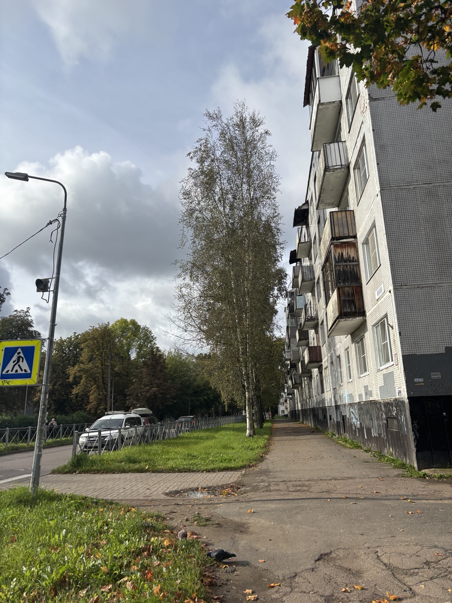

Сначала разберись
Прочитай методичку и пройди обучение. Там есть фотографии подходящих листьев и короткий тест.
«Я придумала этот школьный проект, потому что мне хотелось понять, как чувствуют себя деревья на улицах моего города».
Меня зовут Полина Панина. Я школьница из Кингисеппа, учусь в школе № 1 и занимаюсь в детском технопарке «Кванториум».
Я собирала листья берёзы, измеряла их и сравнивала улицы Кингисеппа. У меня получились разные значения. Тогда я задумалась: а что, если исследование сможет продолжить любой школьник, которому интересно наблюдать за своим городом?
Так появился «ЭкоБиоМониторинг»: с понятной инструкцией, проверкой каждой заявки и картой наблюдений. Мне важно, чтобы по опубликованной точке можно было вернуться к исходной фотографии, а не просто поверить красивой цифре!
Выбираешь место, собираешь листья по инструкции и отправляешь наблюдение. После проверки оно появится на карте.
Она помогает заметить места, которые стоит исследовать подробнее. Если значение ФА у точки выше, это повод посмотреть на условия вокруг дерева, а не готовый диагноз качеству воздуха.
Наблюдения собирают по одинаковым правилам, поэтому сравнивать их проще. На карте видны только заявки, которые прошли проверку.

Я выбрала берёзу повислую: она растёт во многих частях города. У листа можно сравнить левую и правую стороны, а небольшое различие между ними называется флуктуирующей асимметрией, или ФА.
На лист влияют разные факторы, поэтому одно значение ФА ничего не доказывает само по себе. Когда наблюдений становится больше и они проверены, появляется материал для сравнения!
Прочитай методичку и пройди обучение. Там есть фотографии подходящих листьев и короткий тест.
Выбери 2–4 берёзы в одной точке, сфотографируй деревья и 10–30 листьев с каждого.
Укажи место, добавь снимки и поставь точки на листьях. Модератор проверит разметку и заявку.
Результат участия
После обучения и подтверждения первой точки участник сможет получить сертификат волонтёра-исследователя экологического мониторинга. Ещё важнее, увидеть, как собранное наблюдение прошло проверку и стало частью общей карты.
Можно сразу создать аккаунт или сначала посмотреть, как выглядят уже подтверждённые наблюдения.